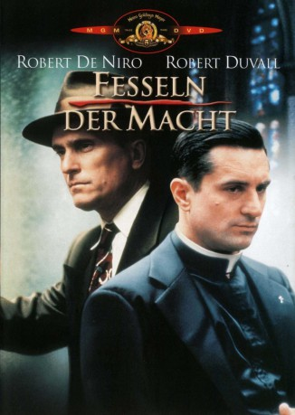

#9101 Fesseln der Macht
Alternativ: True Confessions
 
 IMDB-Wertung: 6.3 / 10
IMDB-Wertung: 6.3 / 10  Metascore: 0
Metascore: 0 
Tom Spellacy ist der Wahrheit auf der Spur. Als Beamter der Mordkommission in Los Angeles der 40er Jahre gerät er an einen Fall, der zunächst aussieht, wie jeder andere. Man findet die Leiche eines Mädchens, die feinsäuberlich in zwei Hälften geteilt wurde. Bald stellt Tom fest, daß die Tote eine Prostituierte war. Bei seinen Ermittlungen stößt er jedoch auf Namen, die man in so einem Zusammenhang besser nicht nennen sollte. Besonders Baulöwe und Ex-Zuhälter Jack Amsterdam hat keine weiße Weste. Erschreckt muß Tom feststellen, daß auch sein karrieresüchtiger Bruder in den Fall verwickelt ist. Plötzlich sieht sich der Detektiv allein einem Syndikat gegenüber. Und wo es um Macht und Geld geht, hat die Gerechtigkeit zwei Seiten...
Jahr: 1981
Dauer: 108 Minuten
FSK: 12
Land: USA Studio: United ArtistsTonspuren: DD5.1 - ,
Untertitel:
Auflösung: 1080p (1920x1040) Größe: 6717 MB
Genre: Drama, Krimi
Regisseur: Ulu Grosbard
Drehbuch: John Gregory Dunne
Soundtrack: Georges Delerue
Darsteller:
 Robert De Niro als Father Des Spellacy
Robert De Niro als Father Des Spellacy Robert Duvall als Det. Tom Spellacy
Robert Duvall als Det. Tom Spellacy Charles Durning als Jack Amsterdam
Charles Durning als Jack Amsterdam Kenneth McMillan als Frank Crotty
Kenneth McMillan als Frank Crotty- Ed Flanders als Dan T. Campion
 Cyril Cusack als Cardinal Danaher
Cyril Cusack als Cardinal Danaher Burgess Meredith als Msgr. Seamus Fargo
Burgess Meredith als Msgr. Seamus Fargo Dan Hedaya als Howard Terkel
Dan Hedaya als Howard Terkel Gwen Van Dam als Mrs. Fazenda
Gwen Van Dam als Mrs. Fazenda Jeanette Nolan als Mrs. Spellacy
Jeanette Nolan als Mrs. Spellacy- Louisa Moritz als Whore
- Darwyn Carson als Lorna Keane
- Pat Corley als Sonny McDonough
 Richard Foronjy als Ambulance Driver
Richard Foronjy als Ambulance Driver James Hong als Coroner Wong
James Hong als Coroner Wong- Fredric Cook als Brenda's Trick
- Pierrino Mascarino als Suspect
- Paul Valentine als Detective #2
- Stephen Powers als Photographer
- Kevin Breslin als Boy #1
- Rose Gregorio als Brenda Samuels
- Thomas Hill als Mr. Fazenda
- Jorge Cervera Jr. als Eduardo Duarte
- Susan Myers als Bride
 Matthew Faison als Reporter #2
Matthew Faison als Reporter #2- Joseph G. Medalis als Deputy Coroner
- Ron Ryan als Detective #1
- Louis Basile als Detective #3
- Louise Lewis als Older Nun
- Margery Nelson als Nun #2
- Kirk Brennan als Acolyte Toomey
- Fred Dennis als Man
- Shelly Batt als Girl
- Mary Munday als Nun
- Colin Hamilton als Headwaiter
- Missy Cleveland als Lois Fazenda
- Michael Callahan Sr. als Sub Deacon
- Hary Pavelis als Cardinal's Attendant
- Luisa Leschin als Tower Girl
- Robert Arthur als Newscaster #1
- Bill Furnell als Newscaster #2
- Sig Frohlich als Waiter
- Steve Arvin als V.O. Radio Announcer
- Joseph H. Choi als Pathologist
- Sharon Miller als Movie Star
- Jeff Howard als Priest #2
- Harry Duncan als Priest at Banquest
- Randy Gitsch als Silent Bit Player / Waiter (uncredited)
- Henry Goldscher als Barber (uncredited)
- John Marlin als Waiter (uncredited)
Datei: X:\1981\Fesseln der Macht (1981, FSK12, 1920x1040).mkv seit 19.07.2018
Festplatte: HD 1980-1986
 Es gibt insgesamt 33 Filme in der Gruppe '1981'
Es gibt insgesamt 33 Filme in der Gruppe '1981'